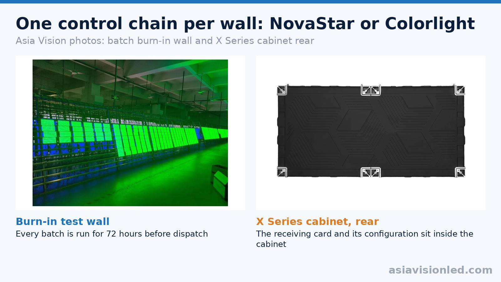
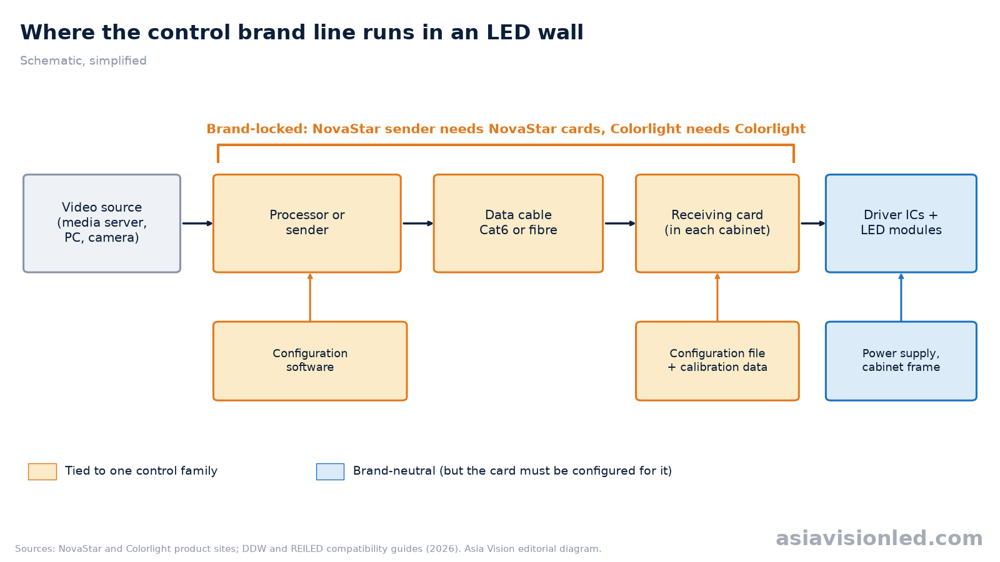
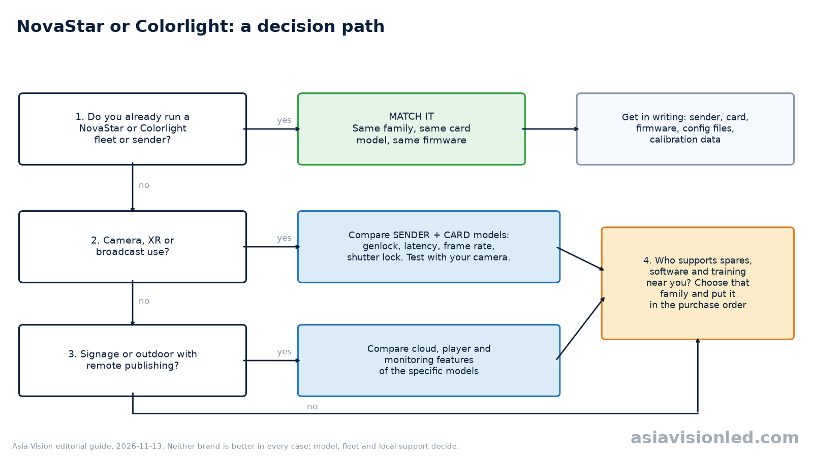
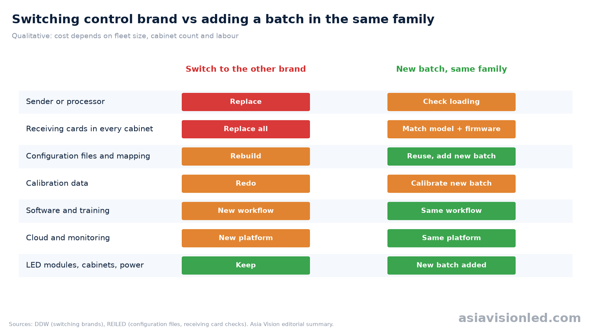

By Danny · 2026-11-13
NovaStar and Colorlight are the two control systems most LED walls are built around, and they cannot be mixed in one signal chain. A NovaStar sender needs NovaStar receiving cards. A Colorlight sender needs Colorlight cards. That choice is made once per wall, sits inside every cabinet, and decides which spares you can buy, which software your technicians must know and what it costs to change course later.
This guide is for rental companies, integrators and distributors buying cabinets in volume. It explains where the brand line really runs, why "same brand" is still not enough, what lock-in looks like in practice and what to write into a purchase order. It does not name a winner. Both brands cover the same jobs, and the deciding factors are nearly always the exact model, your existing fleet and who can support it near you. Product lines below come from each vendor's own website as read on 13 November 2026. They change often, so check the current model list before you specify.
An LED wall's data path has five links: the video source, a processor or sender, the data cable, a receiving card in each cabinet, and the driver ICs on the modules. Our LED control system guide explains each stage. For this decision, one fact matters. The brand line cuts across the sender, the receiving cards and the software that configures both. The modules, driver ICs, cabinets and power supplies sit on the other side of it. They are not tied to a control brand, but the receiving card has to be configured for them.

Where the control brand line runs. Brand-locked links must come from one vendor family; the rest of the cabinet is brand-neutral.
Both vendors publish a full ecosystem. The table lists what each shows on its own site.
| Layer | NovaStar (novastar.tech) | Colorlight (en.colorlightinside.com) |
|---|---|---|
| Controllers and senders | COEX series (MX6000 Pro, MX2000 Pro, CX40 Pro, MX40 Pro, MX30, MX20, KU20); MCTRL R5, 4K, 700, 660, 660 PRO, 600, 300; MSD300 | Senders S20/S20F and S6F/S4/S2; processors from the Z, VX and X lines |
| Receiving cards | 5G series (XA), Armor, MRV and BR series | 5G series, K10/K8/K5+, E320Pro, E120/E80, 5A-75E/5A-75B |
| Configuration software | NovaLCT, SmartLCT, COEX VMP | ColorAdept, iSet, Kylin VICP, LEDSetting |
| Fibre accessories | CVT fibre converters | Optical fiber transceiver |
| Cloud and calibration | Nova Cloud | Colorlight Cloud; calibration systems |
Each brand sends data to its receiving cards over its own proprietary link, even though the cable is ordinary Ethernet-style copper or fibre. Integrators who publish comparisons are consistent on the consequence. DDW states that the sending card or processor and every receiving card must belong to the same system. Unify LED describes mixing as unsupported by both vendors. Neither vendor publishes an interoperability mode that would change that.
Compatibility has three levels, and a wall has to pass all of them:
The practical lesson: never order receiving cards by brand and model name alone. Order them against the cabinet and the configuration file that already runs the wall.
Lock-in is rarely the sender. A sender is one box. The cost sits in the cabinets and in the data around them.
Our multi-site standardisation guide makes the same point for corporate estates: standardise the parts that are expensive to change, and write down how you would leave.
The LED modules, driver ICs, cabinet frames, power supplies and pixel pitch are not tied to a control brand. A cabinet is built to take a receiving card and a configuration, and a supplier that works with both families can usually configure the same cabinet either way. Asia Vision ships NovaStar control by default, with Colorlight as the alternative and MQ available where a project already runs it. That means a new batch can match an existing fleet's card family instead of forcing a second ecosystem into your store.
What is lock-in is the combination: cabinets already carrying cards of one family, plus the files, spares and skills that go with them.
For XR, broadcast and touring, buyers often ask which brand is "better for camera". The vendors' own pages suggest the answer is at model level. NovaStar's COEX 5G page lists tri-level, bi-level and black-burst genlock, HDR10 and HLG, and an adaptive frame rate list that runs up to 240 Hz, with a footnote that some rates need custom firmware. Colorlight's 5G series page lists HDR10 and HLG, frame multiplication to 120, 144 or 240 Hz with a suitable sender, and SHUTTERLOCK, which matches the screen refresh to the camera's shutter. Both can serve a camera wall. What matters is whether the exact sender, receiving card, firmware and cabinet combination has been tested with your camera.
Ask for the sender model, card model and firmware versions in writing, then test at the shutter speeds you will use. Our camera flicker guide, refresh rate guide and XR wall specification cover the test set-up. Loading capacity is also a model question. NovaStar's COEX 5G page lists maximum loading of 141 million pixels for the MX6000 Pro, 35.38 million for the MX2000 Pro and 9 million for the CX40 Pro. Colorlight's 5G series card lists a maximum loading of 384 × 1024 pixels per card. Count your pixels, then add headroom.
Use the path below before you compare brochures. It puts the existing fleet first, because that is where switching costs are highest.

Decision path. Existing hardware first, then model-level features, then local support.
In short: if a fleet already exists, match it. If you are starting fresh, choose on model features for your use case, local support for spares and software, and the supplier's depth with that family. The brand name alone settles nothing.
These lines turn a verbal "NovaStar" into something you can check at delivery:
The last line is the cheapest insurance in the list. A supplier who answers it plainly understands the ecosystem.
On a show with walls from different owners, keep each wall on its own sender and bring them together upstream, in the video system that feeds them. Each wall is calibrated against its own cabinets, and colour will not be identical between brands or between batches. Plan the visual match in content and in calibration, not in the receiving cards. Our stage LED rental guide and rental fleet management guide cover the wider fleet side.
If you must move a fleet to the other brand, almost everything on the brand side changes. The chart compares a brand switch with adding a new batch in the same family. It is qualitative on purpose: cost depends on fleet size, cabinet count and labour.

Switching brand versus adding a batch. Sources: DDW and REILED guides.
A staged approach lowers the risk when a switch cannot be avoided. Move one small screen or one rental pool first, record the new configuration files and the calibration steps, and train the crew on the new software before the rest of the fleet follows. Keep the old sender and spare cards labelled for the old brand until the last wall is converted, so a mixed period does not turn into a mixed-up stock room.
If you are ordering a fleet today, the cheapest moment to avoid a switch is now: pick the family your region can support, ask for the files and keep the cabinets standard.
Our rental and fixed ranges, for example COB Z, E-PRO, X Series and RH-PRO, ship with NovaStar control by default. Colorlight is the alternative and MQ is available where a project already uses it. RH-PRO's product page lists dual power, dual receiver and dual signal paths for rooms that cannot go dark. Every order has a 3-year standard warranty and leaves our Shenzhen factory within 18 days of order confirmation. There is no MOQ and no tooling fee. Tell us your existing sender and receiving card model and we will say which family fits.
Send your sender model, receiving card model and one cabinet's configuration file. We will tell you which control family fits and what to specify. Email info@asiavisionled.com or message us on WhatsApp at +86 172 7666 5558.
Request Control System AdviceChat on WhatsApp